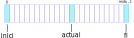

Primeres definicions¶
En aquesta secció et disparo unes quantes definicions de cop. Probablement ja les coneguis encara que sigui parcialment. Et recomano una lectura ràpida per saber on trobar-les en cas que més endavant et calguin.
Què és un fitxer?¶
Una definició més o menys formal de fitxer podria ser la següent:
Un fitxer és una seqüència de bytes guardats en un dispositiu d’emmagatzemament secundari com ara un disc.
On posa seqüència de bytes pots llegir perfectament un array de bytes, doncs això és bàsicament el que és.
Què les dades siguin emmagatzemades a un dispositiu en comptes de directament a la memòria principal, té unes característiques que cal tenir present:
no podem accedir directament a les dades
tenim molt d’espai on deixar dades
ens costarà més temps accedir a les dades que si fossin en memòria principal.
Accés bàsic a un fitxer¶
Per accedir a les dades emmagatzemades o emmagatzemar-les, ens caldrà:
especificar on es troben guardats aquests valors
obrir el fitxer
usar: obtenir del fitxer o deixar les dades al fitxer
tancar el fitxer
Si volem fer servir fitxers, haurem d’aprendre el patró obrir→usar→tancar.
Especificació dels fitxers¶
{kind=link}
Per especificar els fitxers caldrà que indiquem on es troben dins del sistema de fitxers de l’equip on s’està executant el nostre programa.
El sistema de fitxers sol tenir una representació jeràrquica en forma de carpetes (o directoris) que contenen altres carpetes i fitxers. La jerarquia comença normalment amb l’arrel del sistema de fitxers i que podem considerar una carpeta que no és continguda per cap altra carpeta.
Hi ha diferents tipus de sistemes de fitxers, sovint associats al sistema operatiu. És d’agrair que el llenguatge de programació que fem servir, ens permeti desenvolupar aplicacions sense que ens hàgim de preocupar de en quin sistema de fitxers s’executaran, però no sempre serà així. Sortosament, Java ens ofereix aquesta abstracció.
Per fer-ho, habitualment fem servir el concepte de camí o path que
consisteix en una seqüència de noms de carpetes finalitzant amb el nom del
fitxer. Les passes d’aquests camins solen estar separades per un símbol,
sovint / .
Per exemple, depenent des d’on hi fem referència, el fitxer
comprovaprg.sh podria ser especificat per camins com aquests:
/home/usuari/introprg/lib/comprovaprg.sh../lib/comprovaprg.shcomprovaprg.shlib/comprovaprg.sh
Els camins poden ser:
absoluts: quan especifiquen la localització del fitxer independentment de des d’on s’estigui referenciant
relatius: quan l’especificació del fitxer es fa a partir de la carpeta des d’on s’està referenciant.
Als exemples anteriors, només el primer camí és absolut. Es veu fàcilment
perquè comença amb / que indica l’arrel del sistema de fitxers.
Obertura dels fitxers¶
Quan obrim un fitxer, ens caldrà indicar què voldrem fer amb ell. Les operacions bàsiques són:
lectura: només volem llegir dades del fitxer
escriptura: només volem escriure-hi valors al fitxer
Tancament dels fitxers¶
Un cop hem finalitzat la nostra feina amb el fitxer que hem obert, toca tancar-ho.
Si ens descuidem de fer-ho, és possible que el fitxer quedi corrupte o bé que algunes dades no quedin correctament emmagatzemades.
És preferible tancar el fitxer tan aviat no pensem usar-lo més.
Els fitxers oberts consumeixen recursos valuosos del sistema com ara els descriptors de fitxers que es fan servir per cada fitxer obert i que estan limitats.
De vegades els fitxers queden bloquejats perquè no els facin servir altres programes, el que pot implicar que afectem el bon funcionament d’aquests.
En cas que no siguin bloquejats, mantenir-los oberts innecessàriament augmenta el risc de que altres programes hi escriguin causant situacions errònies de difícil reproducció i localització.
Si no ens cal, retornem aquests recursos.
Malauradament, Java no ens avisarà de que hem de tancar els fitxers oberts1. Toca tenir disciplina aquí!
Important
No oblidis tancar sempre els fitxers que obris en escriptura!
Posicions¶
Els fitxers disposen de tres posicions importants: la inicial, la final i l’actual.
La posició inicial correspon a la que conté el primer byte (la posició 0 d’un array). La final és la que conté el darrer byte. Finalment, els fitxers també disposen de la posició en que tindrà lloc la següent operació sobre el fitxer. Les operacions són una lectura o una escriptura d’un byte.
Pots imaginar-t’ho com quan fas un recorregut en un array:
byte[] dades = new byte[10]; // array amb les dades a recórrer
for (int actual = 0; // posició inicial de l'array
actual < dades.length; // posició final de l'array
actual++) { // següent posició al final de la iteració
dades[actual]=1; // operació d'escriptura a la posició actual
}
Com en el cas del codi anterior, amb els fitxers generalment podem
canviar la posició actual (actual) cap al començament, cap al
final o avançar, retrocedir, anar a una posició concreta, etc.
Tipus de fitxers¶
Malgrat tots els fitxers són bàsicament una seqüència de bytes, és molt còmode i habitual distingir dos tipus de fitxers:
fitxers de text
El seu contingut són bytes que corresponen a text. Poden ser llegits per un editor com el que fem servir per codificar els nostres programes. Per exemple, el codi d’un dels nostres programes en Java o la seva sortida quan preparem proves.
A banda, el contingut dels fitxers de text pot estar representat en un o altre format. Per exemple: text pla, csv (comma separated values), XML, HTML, YAML, JSON i un llarg etcètera.
fitxers binaris
El seu contingut no es pot llegir amb un editor convencional donat que conté valors fora del rang de les lletres que formen un text vàlid.
Aquests fitxers necessiten un programa especial per a ser llegits (i escrits). Alguns exemples són els fitxers .class que genera
javac, un fitxer tar.gz amb tots els teus programes empaquetats i comprimits, un mp3 amb la teva cançó favorita o un png amb la foto d’un gatet.
- 1
Més endavant veurem que de fet Java sí ens ofereix ajuda al respecte. Però haurem d’esperar-nos a conèixer les excepcions.